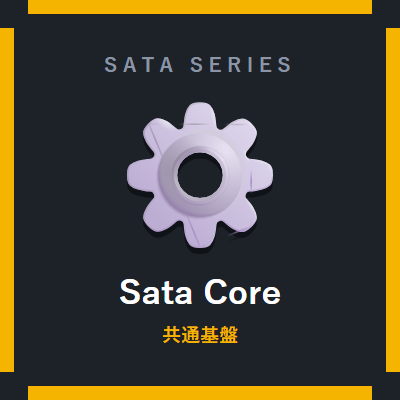
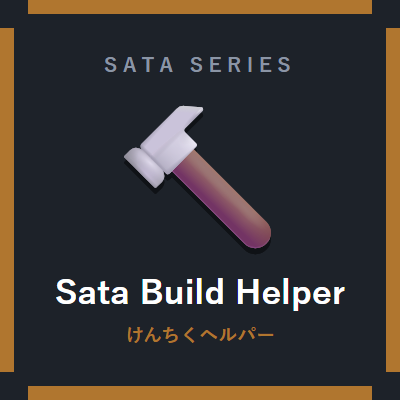

サタのべんり道具箱 Sata Toolbox
シリーズの主役。一括伐採・一括採掘・一括採土の「一括破壊3兄弟」に、 葉の高速消滅・自動植え直し・右クリック収穫・アイテム吸引・ インベントリ整理・自動松明・経験値オーブ統合を加えた便利系10モジュール。
機能とキー操作を見る公開準備中: 現在 Modrinth / CurseForge での公開手続きを進めています。 ダウンロードリンクは公開でき次第、このサイトに掲載します。 いま掲載しているのは機能紹介のみです。
共通基盤の Sata Core ＋ 目的別の5Mod。 「core＋欲しいModだけ」の組み合わせで動きます。ぜんぶ入れてもOK。
シリーズの主役。一括伐採・一括採掘・一括採土の「一括破壊3兄弟」に、 葉の高速消滅・自動植え直し・右クリック収穫・アイテム吸引・ インベントリ整理・自動松明・経験値オーブ統合を加えた便利系10モジュール。
機能とキー操作を見る

| 統一設定画面 | ゲーム内でBキーを押すと、入っているSata Modが全部1画面に並びます。Modごとにタブが分かれ、モジュール単位でON/OFF・詳細設定ができます。 |
|---|---|
| テーマ5種 | 設定画面の見た目を「シネマ（既定）／クール／サイバー／かわいい／サクラ」から選べます。 |
| 6言語対応 | 日本語・English・简体中文・한국어・Español・Português。設定画面の言語だけ個別に切り替えることもできます。 |
| クイック設定 | 「★おすすめ設定」「全部ON」「全部OFF」のワンクリック切替＋名前を付けて保存できるセット3つを、1行のバーにまとめています。Shift+クリックで全Modへ一括適用。 |
| モジュール検索 | 設定画面上部の検索バーで、目的のモジュールを名前からすぐ探せます。タブにはONの数（例 8/12）が出ます。 |
| 設定の共有 | 設定一式をクリップボードに書き出し／読み込みできます。動画で紹介した設定をそのまま渡す、といった使い方ができます（不正なデータは適用されません）。 |
| フェイルソフト | あるモジュールでエラーが続いた場合、そのモジュールだけを自動停止して他の機能を守ります。設定画面に⚠が出て、再試行・詳細確認ができます。 |
| ライセンス | 全Mod MITライセンス。Modパックへの収録も可能です。 |
Modを入れるのが初めてでも、必要なのは 「NeoForgeを入れる → modsフォルダにjarを置く」の2ステップだけです。 画面つきで順番に説明しています。